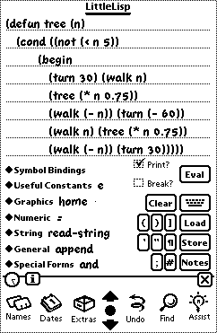
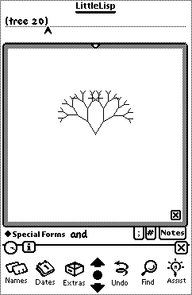

LittleLisp version 1.01
Copyright © David Benn 1998-2000

|
This site is part of the Apple Newton Web Ring. Click on the icon to go to another Apple Newton Web Site Add your Newton Site to the Web Ring! |
LittleLisp version 1.01Copyright © David Benn 1998-2000 |
|
LittleLisp is a Lisp interpreter for the Newton PDA that I have been developing on and off since late 1996 in my limited spare time. It requires NewtOS 2.0 or higher and was developed under Windows 95 with NTK 1.6.1 tethered to a MessagePad 130 running NewtOS 2.0. The language includes graphics extensions and the ability to invoke NewtonScript functions.
Currently, lists, real numbers, symbols (atoms), and strings are supported. There is a function for creating frames but they are not yet first class values. Dotted pairs are not supported.
LittleLisp is a lexically scoped Lisp dialect with higher order functions which has been influenced by Scheme, Common Lisp, and XLisp-Plus. I have yet to make up my mind as to whether I should convert it to LittleScheme or even LittleCommonLisp (probably a contradiction in terms). A modern dialect of APL, J, also influenced me, hence the REPEAT special form and SEQ function (see Special Forms and Built-in Functions).
The name "LittleLisp" derives from at least 3 sources:
I spend too much time at desktop computers but I love to program, so I thought it would be great to be able to sit under a tree or on a sofa (with The Little Lisper :) and fool around with some recreational programming. I've become increasingly interested in functional and alternate paradigms in recent years and I've always wanted to write a Lisp system. It was a great way to learn NewtonScript, not to mention the obvious semantic similarities between Lisp and NewtonScript. I also thought that another programming language for the Newton wouldn't hurt, so in the spirit of Newt and NS BASIC, LittleLisp was born. J.K. Millen wrote a Lisp interpreter for the Newton around 1994 which looks good, but LittleLisp is less minimalistic. I have tried to include a useful set of functions and special forms, providing an interface to NewtonScript for less commonly used functions.
You need to download the LittleLisp package and optionally this documentation (in HTML or Newton Book formats) for offline browsing. Both are available as Zip and Stuffit archives. In addition, the raw LittleLisp and book package files are provided for download if your platform can't handle the archives.
Let me know if you have download problems.
LittleLisp 1.01 is freeware.
A LittleLisp mailing list was created on August 28 1999. This mailing list exists for the purpose of disseminating information about LittleLisp. You'll find out about new versions here first.
The list is intended to be a forum to which you can send bug reports, comments, or example LittleLisp code, ask questions and basically talk about any aspect of LittleLisp.
LittleLisp's interface consists of an input area at the top, several popup menus on the lower left, and various buttons on the lower right. When output is required (corresponding to the PRINT in Lisp's READ-EVAL-PRINT loop (REPL)) a slip opens to display it. This is scrollable via the Newton's scroll arrows. When graphics output is required, another slip opens. Note that there is no support yet for a rotated screen. Apart from this, please let me know if there is a problem with what you see on your Newton, or if you have suggestions for improving the interface. See also some possible improvements in Final Word.
The menus are: Symbol Bindings - which is dynamically updated with function and variable definitions, Useful Constants, Graphics, Numeric, String, General, and Special Forms.
There is a Clear button which clears the input area, a Print? checkbox which turns output slip opening on or off (useful if your program is doing graphics), an Eval button which evaluates the expression(s) in the input area and produces some sort of output. Note that if a program generates an error, the output slip will open irrespective of Print?'s setting. If you don't close the output slip between evaluations, future evaluations are appended.
The Load button pops up a menu of Note files from which you can select. When one is selected, all the code (hopefully) in that note file is evaluated. The Store button stores the input area's content as a note in the specified file. The Notes button launches the Notes application.
The Break? checkbox is used to specify whether a progress slip with a stop button should be invoked during evaluation. Note that during a Load operation (see above), such a slip is always invoked.
There are convenience buttons for ( ) ' ". The
] button balances parentheses
to the end of the input area. There is also a button which creates
a new line and moves the input point to it, indenting according to the
number of open parentheses. The ; character introduces
a one-line comment. The # character introduces the
NewtonScript function
prefix (e.g. (#Atan n) would apply the NewtonScript function
Atan to n. There is an on-screen keyboard
button and LittleLisp will of course accept input from an attached keyboard.
Also, don't feel constrained by the ASCII character set. You can use any
valid Unicode character as long as you can input it! (e.g. click the
option key on the on-screen QWERTY keyboard).
Here's what LittleLisp looks like:
|
 |
 |
These screen shots show a function definition and the result of that function's application to 20.
Here is a list and brief description of each special form. Some knowledge of Lisp is assumed. Note that the case of Lisp symbols is immaterial.
(and expr1 ... exprN)
Return nil upon encountering the first expression which evaluates to nil , otherwise return the final
value. Expressions are evaluated and tested from left to right.
(begin expr1 ... exprN)
Evaluate each expression in turn, returning the last.
(cond (expr1 [expr2]) (expr3 [expr4]) ...)
One or more lists each containing one or two expressions are expected.
The first expression in each list is evaluated and if
non-nil,
the second expression (or the first if only one is present) is evaluated and
returned. nil is returned if no lists are supplied or
if no first expression evaluates to non-nil. If there
are either zero or more than two expressions in a cond clause, an error is
generated.
(defun name ([formal-arglist]) expr1 [expr2 ...])
Create a named function. This is syntactic sugar for
(setq name (lambda ...))
(error object)
Abort the current read-eval-print loop with an error message. Results prior to this are also output. I have categorised this as a special form since it changes the flow of control.
(frame ((symbol1 expr1) (symbol2 expr2) ...))
Construct a NewtonScript frame instance from a list of bindings. There is currently no other support for frames.
(if condition expr1 expr2)
Return expr1 if condition
is true (non-nil) otherwise nil
or expr2 if present. If condition
is false and expr2 is absent, nil
is returned.
Only one of expr1 or expr2 is
evaluated. The only differences in Scheme are that #f
represents false, rather than nil, and in the
case where condition is false and
expr2 is absent, the return value is undefined.
(lambda ([formal-arglist]) expr1 [expr2 ...])
Create an anonymous function/closure. This can be applied immediately
or bound to a name via setq, a function parameter,
or let*.
(let* ((symbol1 expr1) (symbol2 expr2) ...) expr3 [expr4 ...])
This is the same as Scheme's lexical binding let* special form. Symbols are bound from left to right and the scope of a binding is the portion of the let* expression to the right of that binding. The expressions after the binding pairs are evaluated from left to right and the final value is returned.
(or expr1 ... exprN)
Return the first non-nil value, otherwise
nil . Expressions are evaluated and tested from left
to right.
(quote expr)
Return expr unevaluated.
'expr is equivalent, and is converted during the read
stage of the REPL to (quote expr). If you have code
which constructs code involving this form, use quote,
not '.
(repeat N expr)
Evaluate expression N times and return the result as an N-element list.
(setq symbol expr)
Bind an expression to a global or local (function parameter or
let* binding) variable.
(while cond-expr expr1 ... exprN)
Evaluate each expression (1..N) from left to right while the
conditional expression is non-nil.
Here is a list and brief description of each function. Some knowledge of Lisp is assumed. Note that the case of Lisp symbols is immaterial.
General primitives.
(append [list1 ... listN])
The contents of each list are appended together to form a new
list. If no arguments are supplied, nil is
returned.
(apply func arg-list)
Apply the function to the argument list. Function symbols may optionally be quoted, e.g.
(apply + '(1 2 3)) (apply '+ '(1 2 3))but this is not necessary since all functions (including built-ins) are first class. A typical use is to pass an arbitrary function to another function in order to apply it to one or more arguments. If the function is preceded by
# it is presumed to be a NewtonScript function.
(car list)
Return the head of a non-empty list.
(cdr list)
Return the tail of a list.
(cons expr list)
Return a new list where the first argument is at the head,
and the second argument constitutes the rest of the list.
(eval expr)
Invoke the interpreter on an expression. The latter is evaluated in
the current environment.
(length list)
Return the length of a list.
(list expr1 ...)
Create a new list consisting of one or more expressions of any
type.
(map func arg-list1 ...)
The function (func) is applied to as many arguments as there are argument lists. Arguments for each invocation of func are taken from the same position in each argument list. All argument lists must have the same length in this implementation. A list containing the results is returned.
(member expr list)
Return the first sublist of list whose car is expr. If expr is not found, nil is returned. The test for equality is equal?, ie. structural equivalence.
(not expr)
If the single argument evaluates to nil , t is returned, otherwise nil is returned.
(nth n list)
Returns the Nth element of the list where 1 <= n <=
(length list). It is equivalent to:
(defun nth (n L)
(cond ((null? L) '())
((= n 1) (car L))
(t (nth (- n 1) (cdr L))))))
(seq n)
Returns a list of the integers 0..n-1.
(set-nth! n list expr)
Sets the Nth element of the list to the specified value,
where 1 <= n <= (length list)
General predicates.
(atom? expr)
Return t if expr is an atom (symbol, number, t , nil ), otherwise nil .
(eq? expr1 expr2)
Return t if expr1 and expr2 evaluate to
identical symbols, numbers, or references, or if they both evaluate to
t or nil . Otherwise
nil is the result.
(equal? expr1 expr2)
Return t if expr1 and expr2 are structurally identical, otherwise nil . equal? would return t where eq? would, but unlike eq? , two lists whose references were different, but whose structure was identical would cause equal? to return t .
(list? expr)
Return t if expr is a list (note that nil is considered to be a list and an atom), otherwise nil .
(null? expr)
Return t if expr is the empty list or nil , otherwise return nil .
Numeric primitives.
+, -, *, /
All work with one or more arguments, e.g.
(/ 2) => 0.5
=, >, <
All work with one or more arguments, e.g.
(< 1 2 3 4) => t
cos, log, log10, pow, sin, sqrt, tan
pow takes two arguments while the others take one,
e.g.
(pow 2 3) => 8
Arguments to trigonometric functions are taken to be in radians.
(random n)
Generates a random number from 0..n-1.
Graphics primitives. These are mostly Turtle Graphics commands with
all but plot and draw-shape affecting the (imaginary
and invisible) turtle's location and orientation.
(draw-shape shape-object [style-frame])
Draw a shape on LittleLisp's graphics view where shape-object is the return value from a NewtonScript shape-creation function, e.g. (draw-shape (#MakeOval 10 10 50 50)). The drawing is clipped to the graphics view and added to the refresh list. This function does NOT affect the turtle's position. Note: if you use this function, it is assumed that you know enough NewtonScript to understand what a shape object and style frame are, that you have access to NewtonScript programming documentation, and that you pass appropriate values. See also Calling NewtonScript from LittleLisp.
(home)
Reset the turtle to its home position and direction, in the center
of the graphics view and pointing upward.
(line-to x y)
Move the turtle's pen to (x,y), drawing from the current position
to there.
(move-to x y)
Move the turtle's pen to (x,y) without drawing.
(plot x y)
Plot a pixel at (x,y) but do NOT change the turtle's position.
(turn degrees)
Rotate the turtle left (minus) or right by the specified amount.
(walk steps)
Move the turtle by the specified amount in the current direction.
String primitives, similar to those found in Scheme (albeit a
subset).
(read-string)
Permit entry of a string via a modal input slip.
(string expr1 ... exprN)
Construct a string from its arguments.
(string? expr)
Return t if expr is a string, otherwise nil .
(string-copy string)
Make a copy of the supplied string.
(string-length string)
Return the number of characters in the specified string.
(string->number string)
Return a number given a string, or nil if the
string does not represent a valid number or the count of digits on either
side of the decimal point exceeds 63. Examples of valid numbers are:
1, 1.2, -12,345.78
(substring string start end)
Returns a string corresponding to the specified portion of the
string. start and end must be integers satisfying
0 <= start <= end <= (string-length string)
(write-string string notepad-filename)
Write a string to the specified Notepad file. Both arguments are
strings. The file must already exist.
I/O primitives other than read-string and
write-string.
(ask message-string button-string1 ... button-stringN)
Display a message and the specified buttons in a notifier, returning
the number (from 1 to N) of the clicked button.
(display expr)
Display the expression in a slip in human-readable manner.
; Draw a tree
; Try n=20
(defun tree (n)
(cond ((not (< n 5))
(begin
(turn 30) (walk n)
(tree (* n 0.75))
(walk (- n)) (turn (- 60))
(walk n) (tree (* n 0.75))
(walk (- n)) (turn 30)))))
; Draw arbitrary regular polygon
; d = side length. Try d=40, sides=5
(defun poly (d sides)
(do-poly d sides (/ 360 sides)))
(defun do-poly (d sides angle)
(cond ((> sides 0)
(begin
(walk d) (turn angle)
(do-poly d (- sides 1) angle)))))
; Draw flower with sides of length len
(defun flower (len)
(let* ((fourside (lambda (len n)
(cond ((> n 0) (begin
(walk len) (turn 30)
(walk len) (turn 150)
(fourside len (- n 1)))))))
(do-flower (lambda (len) (begin
(fourside 40 2) (turn 20)))))
(repeat 18 (do-flower 40))))
; The Dragon Curve
; Try depth = 8, side = 5
(defun dragon (depth side)
(cond ((= depth 0) (walk (/ side 2)))
((> depth 0) (begin
(dragon (- depth 1) side)
(turn 90)
(dragon (- (- depth 1)) side)))
(t (begin
(dragon (- (+ depth 1)) side)
(turn 270)
(dragon (+ depth 1) side)))))
; Draw a donut
(defun torus ()
(repeat 36
(begin
(repeat 36
(begin (walk 8) (turn 10)))
(walk 3)
(turn 10))))
; Draw a star with sides of length len
(defun star (len)
(move-to 100 150)
(repeat 12
(begin
(walk len)
(turn 150))))
; Try n = 3
(defun boxit (n)
(cond ((= n 0) (walk 2))
(t (let* ((M (- n 1))
(lt90 (- 90)))
(boxit m) (turn lt90)
(boxit M) (turn 90)
(boxit M) (turn 90)
(boxit m) (turn lt90)
(boxit M)))))
; 3 simple combinators: true, false, if.
; Pierce 1995
(setq True
(lambda (tr) (lambda (f) tr)))
(setq False
(lambda (tr) (lambda (f) f)))
(setq myIf (lambda (l)
(lambda (M)
(lambda (n) ((l m) n)))))
; A test of 'if'.
(((myIf false) 'M) 'N)
; Chaos from a simple equation
; Try k=0.5..2, x=0.1, i=0, n=200, step=4
(defun kx (k x i n step)
(move-to 0 100)
(let* ((draw (lambda (x i)
(cond ((not (> i n))
(let* ((x (-(* k x x) 1))
(ampl(+(* x 25)100)))
(line-to i ampl)
(draw x (+ i step))))))))
(draw x i)))
; Draw a Sierpinski triangle
; Try times = 200
(defun sierpinski (times)
(let* ((XX '(50 170 110))
(yy '(50 50 150))
(x 110) (y 50))
(repeat times
(let* ((posn (+ 1 (random 2))))
(setq x (/ (+ x (nth posn xx)) 2))
(setq y (/ (+ y (nth posn yy)) 2))
(plot x y)))))
; Approximate PI.
; Try n = 500 but enable Break!
; More iterations are required for an accurate value of PI.
(defun pi (n)
(let* ((4* (lambda (x) (* X 4)))
(1+ (lambda (x) (+ x 1)))
(3+ (lambda (X) (+ x 3)))
(terms (map 4* (seq n)))
(first (map 1+ terms))
(second (map 3+ terms)))
(* (apply +
(map / (map * first second))) 8)))
; Sort numbers in ascending order (setq x (repeat 5 (random 50))) (defun sort(y)(#Sort y '< nil)) (sort x) x ; Get a frame slot's value. (#GetVariable (frame ((x 2))) 'x) ; Draw an ellipse with a pen size of 5 pixels. ; Notice that real numbers must be converted to integers here. (draw-shape (#MakeOval (#floor 10) (#floor 10) (#floor 50) (#floor 80)) (frame ((pensize (#floor 5)))))
; A counter object
(defun mkCounter (n)
(lambda ()
(setq n (+ n 1))))
(setq Counter (mkCounter 5))
(repeat 7 (counter))
; Simple random sentence generator.
; Norvig, p 36.
(defun sentence ()
(append (noun-phrase)
(verb-phrase)))
(defun noun-phrase ()
(append (article) (noun)))
(defun verb-phrase ()
(append (verb)
(noun-phrase)))
(defun article ()
(one-of '(the a)))
(defun noun ()
(one-of
'(man ball woman table)))
(defun verb ()
(one-of
'(hit took saw liked)))
(defun random-elt (choices)
(nth (+ (random (length choices)) 1)
choices))
(defun one-of (set)
(list (random-elt set)))
(sentence)
; Rule-based version of above sentence generator.
; This one's somewhat slower. Norvig, p 39.
(defun rule-rhs (rule)
(cdr (cdr rule)))
(defun rewrites (category)
(rule-rhs
(assoc
category *grammar*)))
(defun assoc (sym alist)
(cond ((null? alist) nil)
((eq? sym (car (car alist)))
(car alist))
(t (assoc
sym
(cdr alist)))))
(defun generate (phrase)
(cond ((list? phrase)
(merge
(map generate
phrase)))
((rewrites phrase)
(generate
(random-elt
(rewrites phrase))))
(t (list phrase))))
(defun merge (L)
(cond ((null? L) '())
((atom? (car L))
(cons (car L)
(merge (cdr L))))
(t (append
(merge (car L))
(merge (cdr L))))))
(setq *simple-grammar*
'((sentence -> (noun-phrase verb-phrase))
(noun-phrase -> (article noun))
(verb-phrase -> (verb noun-phrase))
(article -> the a)
(noun -> man ball woman table)
(verb -> hit took saw liked)))
(setq *grammar* *simple-grammar*)
(generate 'sentence)
Although every care has been taken in the development and testing of LittleLisp, the author will not be held liable for damages caused either directly or indirectly as a result of its use. Nor is its suitability guaranteed for any particular purpose.
A good starting point for learning more about Lisp is Daniel P. Friedman and Matthias Felleisen's The Little Lisper (MIT Press, 1987). Its more recent incarnation is as The Little Schemer (MIT Press, 1995), and its sequel: The Seasoned Schemer (MIT Press, 1996).
You can find out more about Scheme from The MIT Scheme page from where you can obtain, among other things, the latest version of the definitive Revised Report on Scheme. There are lots of good books about Scheme, among them Brian Harvey and Matthew Wright's Simply Scheme: Introducing Computer Science (MIT Press, 1994), and Harold Abelson, Gerald Jay Sussman and Julie Sussman's Structure and Interpretation of Computer Programs (MIT Press, 1985). These are as much about Computer Science in general, as they are about Scheme.
The definitive reference for Common Lisp is Common Lisp the Language by Guy L. Steele Jr (Digital Press, 1984). Mine is an old copy. You can download Common Lisp the Language, 2nd Edition in various formats.
I've always been fascinated by Turtle Graphics (TG), hence the inclusion of TG commands in LittleLisp. It's also interesting to note that Logo is often considered to be a dialect of Lisp. I implemented TG in my ACE BASIC compiler and wrote a paper describing a TG implementation for Ken Iverson's J language. The definitive reference for TG is Harold Abelson and Andrea diSessa's Turtle Geometry: The Computer as a Medium for Exploring Mathematics (MIT Press, 1992).
The examples make reference to Pierce (Lambda Calculus) and Norvig (Miscellaneous). The first is a 1995 paper by Benjamin C. Pierce entitled Foundational Calculi for Programming Languages which was at that time (December 22 1995) supposed to appear in the CRC Handbook of Computer Science and Engineering, but I don't know if it did. The portion of the paper of interest here is that concerning the Lambda Calculus. There are plenty of references which treat this topic, e.g. Daniel P. Friedman, Mitchell Wand, and Christopher T. Haynes' Essentials of Programming Languages (MIT Press, 1992), and Ravi Sethi's Programming Languages: Concepts and Constructs (Addison Wesley, 1996). Peter Norvig's Paradigms of Artificial Intelligence Programming: Case Studies in Common Lisp (Morgan Kaufmann, 1992) was used as a reference for the sentence generation example code.
Bug fixes
map and apply: too many evaluations were
occurring.(random N) produced values in the range 0..N instead of
0..N-1.member was incorrect. It was searching
too deeply.nil was not being handled correctly by some
built-in functions.Features
;") - has been added.rand was renamed random to be Scheme
compliant.draw-shape was added to provide a more general graphics
capability than is provided by the other built-in functions.member? was converted to member to be
compliant with other Lisp dialects.while and error special forms were
added.ask, display, list?
nth, and set-nth! functions were added.
Bug fixes
eval function was inadvertently mapped to a
non-existent handler as a result of an untested late change in
1.0ß.Features
if special form.
write-string function.The following are some of my thoughts for future LittleLisp releases, in no particular order:
Eval;Since I don't really have time to work on LittleLisp, I've released the all the Windows NTK 1.6.1 project files (including exported text). Better late than never I guess. Here's the ReadMe file from the distribution.
I'd like to thank Mark Zimmerman for his early attention to LittleLisp and his excellent suggestions. Thanks also to Laurent Cheno for converting the beta docs to Newton Book format, and Gary Moody for the 1.01 version of the Newton Book. Aaron Reichow was the one who kept bugging me (nicely) to release the source to LittleLisp so he could adapt the display code to his own needs, which as it turns out, took me far too long. Sorry Aaron.
Please feel free to tell me what you're doing with LittleLisp. If you write interesting programs, I'd love to see them and maybe include them in this document or make them available elsewhere.
Direct any bug reports, questions or comments to me via e-mail (djbenn@ozemail.com.au) and I'll respond as soon as I can. You can also reach me by phone on +61 8 8266 6508 [home] or +61 8 8203 3682 [work].
Enjoy!
David Benn, Adelaide, South Australia, January 2002